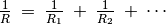
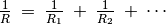

Mesurer une Résistance¶
Objectif
ExpEYES a une borne marquée SEN, qu’on peut utiliser pour mesurer
des résistances dans l’intervalle de  à
à  . On peut aussi
étudier des associations en série ou en parallèle de résistances. La
résistance effective d’une association en série est
. On peut aussi
étudier des associations en série ou en parallèle de résistances. La
résistance effective d’une association en série est
 . Pour une association en parallèle, elle
est donnée par 
. Pour une association en parallèle, elle
est donnée par 


Procédure
- Connecter la résistance entre SEN une borne GND
- Observer la valeur afficher dans le panneau de droite
- Essayer des associations en série et en parallèle